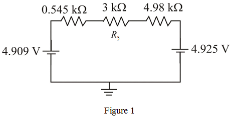

The Thevenin voltage is the voltage across the resistor,  .
.
Calculate the voltage across the resistor  , using voltage division rule.
, using voltage division rule.
Refer to Figure P1.17 in the textbook.
Calculate the Thevenin equivalent circuit to the left of node 1.
The Thevenin resistance is,
The Thevenin voltage is the voltage across the resistor, .
Calculate the voltage across the resistor , using voltage division rule.
Calculate the Thevenin equivalent circuit to the left of node 2.
The Thevenin resistance is,
The Thevenin voltage is the voltage across the resistor,  .
.
Calculate the voltage across the resistor,  using voltage division rule.
using voltage division rule.
Draw the Thevenin equivalent circuit with load resistor.

Calculate the current through the detector branch,  .
.
Thus, the current through the detector branch is .
Calculate the voltage across the detector branch,  .
.
Thus, the voltage across the detector branch is .